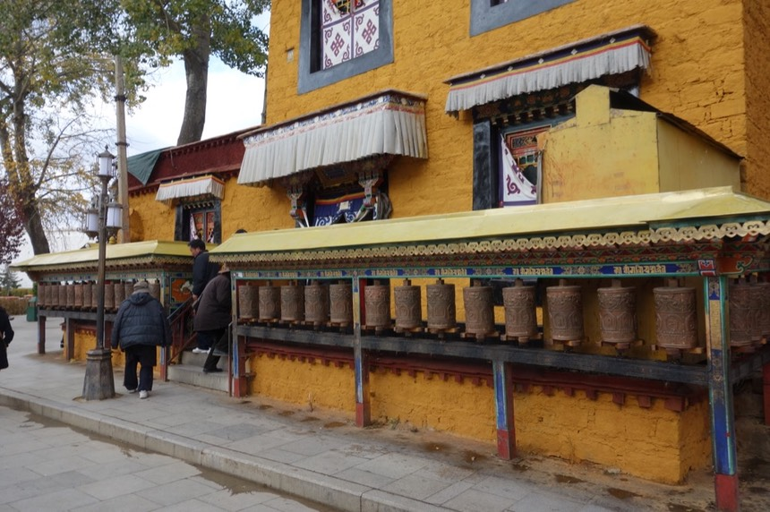
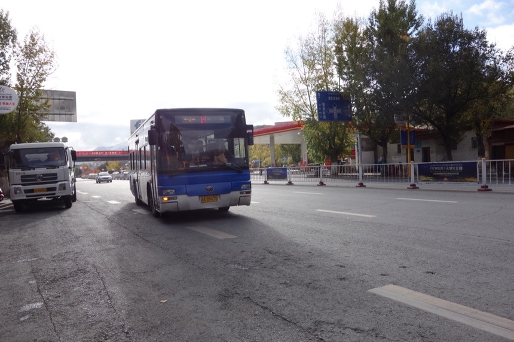
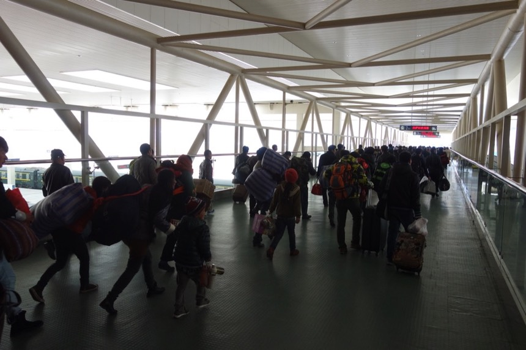

11/2 Day 13 火車
半夜睡到迷糊時，有種已經回到家，睡在自己床上的錯覺。
那回到家之後，是否半夢半醒間也會覺得自己仍在異鄉飄泊？
安逸的環境睡上一覺，所幸沒有因為精神上的懈怠而生病，睡醒依然覺得很有元氣。
人一放鬆下來，才開始感覺到腳踝凍傷挺慘的。
臉也曬黑，跟戴太陽眼鏡的部份明顯色差，最慘的是鼻子。
不僅曬紅脫皮 呼吸道因為乾燥的天氣，擤鼻涕都會噴血已是常態。
直到回到台灣一個月之後，情況才改善。
雖然已經不太需要“那麼”早起，可是早起已經成了習慣，且今天收拾行李好輕鬆，三兩下就搞定了。
不騎單車，背上諾大的包包，我就變成背包客。
一樣的景色，等我著裝完畢，天色已經完全亮了。旅館的門口就是公車站，可以搭公車到火車站。
離發車還有一點時間，早上想用步行的到處走走，目標是布達拉宮繞行一周。
然後再搭公到火車站 ，昨天往返車站<->市區，都搭計程車，實在太傷荷包...
身為背包客，我的背包卻破了一個大洞。
破洞用塑膠袋從內部擋住，雖然東西不會掉下來，但是外面那個藍色的水壺，則是不停的～不停的～一直掉在地上。
站著的時候更明顯了，就是這節露出的腳踝凍的挨挨叫，褲子應該要買長一點的，襪子也是。
物價到拉薩已經高到一個極致了。
路邊隨便一間不起眼的早餐店，想說喝碗豆漿吃一籠包子吧。
豆漿從0.5元->2元。包子從一籠3元，變成一個1元。
對於手頭寬裕的旅行者這點價錢不算什麼，但經歷過物價波動前後的我，感覺比較深刻。

雖然漲價了，但我還是吃了...下次再來中國不知道是何年月，那時的物價會變怎麼樣呢？
用餐完畢繼續往我印象中的布達拉宮方向走，路上真是五步一崗十步一哨，只要是十字路口，就會設立一個這樣的東西。
雖然看起來有點嚴肅，但是對觀光客來說也許還挺方便的，因為裡面有地圖、能問路，手機還可以免費充電。（提供充電器）
路上的藏人很多，很像旅行團，但不知道他們是怎麼來到拉薩的，大致上穿的都比較樸實，然後會搖轉呀轉的那個。
我從一個公園進去，不知怎麼走的，居然可以看到布達拉宮的後側方，就這麼開始繞行了起來。
廣場那邊一群人，大家在做收音機的體操。
畢竟是旅遊勝地，周圍一圈都是做生意的攤販自然不用多說。
對於喜歡轉這個的人有福了～一路上全部都是呀～可以讓你轉到手軟。

我對這東西的理解是，對於不識字的藏人，轉印有經文的這個，就表示念了一遍經的意思（應該）
雖然路有寬有窄，但環繞布達拉宮的一圈路都是公園或是人行步道區，進來這邊需要經過安檢站。
這就是其中一個安檢站，對於拉薩有這麼多的軍警和這麼嚴格的保安，我覺得有點遺憾。
布達拉宮很漂亮，想著裡面的小喇嘛如果要翹課的話，得翻過這麼高的圍牆才能到外面。
騎車一路上都看見跪拜的僧人，布達拉宮山腳下也有。不知道他們這一路拜了幾年才走到這？
又是用什麼樣的心情迎接最後這一短路？
昨天我騎單車在欄杆的外側，今天換步行走在內側。
對了，除了用搖的那個之外，也有很多藏人是手持佛珠的。
這個是大門，入口兼售票處（當然就會有賣黃牛票的人，大概就是把比較便宜的團體票賣給散客這樣）
布達拉宮（應該說藏式建築）看起來外觀都白白的，那個白白的究竟是什麼呢？
我也不知道是什麼，有點像是石灰還是什麼之類的，感覺只要下一場大雨就會被沖刷脫落。
手癢的人可以準備轉經了。
一整條全部都是這個～～努力的轉吧～
別以為用轉得很輕鬆，有很多老到連走路都要靠家人扶持的長者，手虛弱到連轉都轉不太動。
沿著側門走到底，有一個湖泊，走到這繞行一圈就收工了。
人還蠻多的，而且現在還很早，等時間再晚一點，人潮應該會更多，尤其是夏天旅遊旺季的時候 =..=
走了一個多小時，從各種角度看布達拉宮，心滿意足。
這三個尖尖是某個也很有名的不知道什麼...周圍也有一圈轉經可以轉，繞行這個一圈比繞行布達拉宮要容易得多。
這是布達拉宮的後面。沿著布達拉宮到處都有出入口，所以不用擔心一定要從從哪邊才能進來或是出去。
搭14路公車往車站前進

公車的終點站是火車站，所以很多帶大件行李的旅客，不論從何而來，一樣都要回家了。
十點多就到車站，領回平安無事的小喵號。
火車站週邊常常會出現一群衣衫襤褸，完全不會說漢語的藏人集團，有點像乞丐，但是又不是。
會一直打量著你，毫不客氣地拿你的東西起來端詳，或是直接霸佔著店內的座位什麼也不點，一坐就一整個下午。
昨天在尋找過夜處這個煩人的問題時，也遇到了一群，由於語言不通，那感覺更是令人感到不快。
一直在打量裝著單車的紙箱，這也是為什麼我花了50元請旅館幫忙妥善保管的原因。

早上和下午不一樣，早上是發車的高峰期，很多旅客等著進站。
檢查的關卡設置了更多的人力，通過安檢後終於能進到車站大廳。（昨天只在旁邊的售票處而已）
紙箱還挺重的，拿一段時間，就要放下休息一會。
算是個冷笑話吧，進入一樓大廳之後，要到二樓大廳候車，然後從二樓再下到一樓的月台。
這個一樓->二樓，跟二樓->一樓，都是要爬樓梯的， 旁邊雖然有電扶梯，但是根本沒有啟用。
隨著發車時間的接近，湧現的人就越多，等下想必又是插隊和推擠的惡夢。
因為是12點發的車，還有兩個小時的時間，所以現在人潮並不多，有很多的座位可以坐，到後來連站著都要找地方。
然後搭乘青藏鐵路都會被要求要寫的健康登記卡。
背面是密密麻麻的說明文字，大致上就是如果你搭了青藏列車但是身體不適領便當了，是你自己的問題。
其實青藏鐵路裡面有供暖氣和供氧，沒有那麼危險（很悶熱倒是真的）
二樓除了候車之外，還有很大的紀念品區域，想要買東西的人有福了。

奇怪的玩偶
各式各樣的藥材
跟一些有的沒的
除了這些紀念品，二樓也有一間超市，裡面就是賣餅乾、泡麵罐頭這些，因為搭火車時間很長，車上用餐又很貴，而且沒賣泡麵。
所以很多人都會自備糧食，我個人的親身經歷，青藏鐵路內賣的伙食，根本是明搶～什麼鬼價錢跟爛東西。
請自備糧食搭乘青藏鐵路。如果你很有錢的話，可以忽略這點。
可以進入月台的當下，人真的很多，但大家依照自己的車廂排隊，上車的制序比我想的好。
噢～對了，如果你買的是臥鋪車廂，就不用在這邊擠，臥鋪有自己的通關走道。（應該，有看到標示）
這是二樓往月台的走道，從這邊往下看就是火車。

月台很寬敞，很適合排隊（？）今天天氣也挺好的～
排隊吧，比我預期的要來的有秩序，也許因為班次不多，所以不像一般的火車站那樣鬧哄哄的。
一路上都在驗票，驗證件。最後一次驗票上要進入車廂的那一刻。

硬座非常客滿，拿著紙箱的我很不方便移動，車廂內也放不下紙箱，只能倚靠著車廂門的走道口擺著。
後來我被車廂長叫過來，“這紙箱是你的是吧？不能這樣擺！”
說完就把紙箱立起來，然後說這超過隨身行李的範圍 ，如果要加收錢的話，他知道我坐哪，會再過來跟我收。
帶著小喵號搭了這麼多趟車，它不是第一次要被收託運費用，我也習慣了，但直到下車為止，他都沒過來跟我收錢。
等我把紙箱放好，車內的行李架老早已被塞爆，諾大的包包只能放在腳邊，很卡，畢竟位置已經很窄。
乘車時間之所以這麼長，除了路途遙遠，其實是因為有很多時間花在車站等候會車，青藏鐵路是單線鐵道，
但是雙邊發車，所以要不停地在大大小小的火車站停車。等候對象的火車交匯而過。
坐我對面的是兩位藏人+一個藏人小朋友。
他們做得這麼憋（旁邊還有一個空位）是因為兩個大人買了兩張票，小朋友沒買票，所以只能坐兩個位置。
等到發車後確定旁邊暫時沒坐人，才坐寬一點，附帶一提，車廂上換位置的情況非常普遍。
雖然每張票都有劃位，但你能不能坐到屬於你的位置，得看有沒有人佔著你的位置，以及對方願不願意還你。
大家很努力的在寫剛才那張健康表格，連小孩都要寫。
火車上有賣便當，但是價錢很高。
像這個，主菜是一小片火腿的便當，要價人民幣30元，折合台幣約150元。
我拍完照，聽到價錢之後，就還給了車廂內兜售便當的餐車，改買一隻25元(台幣約125元）的滷雞腿。
中午發車，但時間過得好慢～好慢，一個小時～兩個小時這樣慢慢的爬。
火車開得算快，沒多久就爬到了白雪茫茫的高原上，旁邊就是青藏公路。
興奮地想跟誰說，我前幾天還在這上面踩踏單車呢！但應該不會有人在意這點。
默默的看著倒退的風景，逐漸遠離拉薩。
運氣很好，在太陽下山之前開到了唐古拉山口，青藏鐵路的最高處，此時正好夕陽西下，景色很美。
過了這裡，就離開西藏了，又回到青海。
一開始跟隔壁還有對面的很不熟，後來聊開了就認識了，有兩個是放假的軍人。
坐我隔壁的是三個死黨一起離職出來自助旅行，跟對面的藏族，雖然語言不通，但用一副撲克牌就化解了隔閡。
一起玩牌時間過的快多了（大老二台灣規則），規則由我決定，因為差異實在太大，我沒玩的時候，還要待命被咨詢玩牌的規則。
比如我們最小的花色是梅花，可是大陸最小的是紅心還是什麼的。然後三張一樣也可以出，順子也可以一次出六張等等。
我搭車到蘭州要25小時，自以為很遠，但他們搭車到廣州要48小時，整整兩天的時間在火車上。
入夜後，餐車又重新登場了，繼續吆喝著超貴又難吃的便當。中午只吃了一隻滷雞腿，真的餓了。只好買一個。
我剛剛還嘲笑主菜是一片小火腿，現在連火腿都沒有，也沒有白煮蛋，這樣的便當，要價15元（折台幣約75元）
真的是...哀，誰叫我沒帶泡麵上火車，另外火車上有餐車，用餐時間的廣播還會念菜單上的每一道菜名。
我去餐車參觀過一次，用餐的都是車上的乘務員，幾乎沒看到乘客在裡面吃飯。
夜裡上廁所時，發現車廂門已經結霜。

車廂內有暖氣，但是空氣很差，悶得令人難受，車廂“內”不能吸菸，但是車廂”走道“可以。
所以煙味還是四處飄散，而且很多人是直接就坐在座位上抽起菸來，好聲好氣的跟對方說這邊不能吸菸，對方還不怎麼鳥你。
晚上去看我的紙箱是否安然無恙，發現有個人睡在這。
他並不是沒有票，沒票根本不可能上車，是因為硬座實在太難～太難睡覺了。
很多人都躺在地上的走道，或是用各式各樣奇怪的姿勢入眠，睡在車廂間通道是個好選擇，寬敞，而且空氣清新的多。
晚上車廂內的燈光並不會調暗，各式各樣的噪音依舊，難以入眠。
走道上那個穿白衣服，就是餐車的販售員。
不論什麼時候總是有人在聊天，跟24小時的政論節目似的，是都不會愛睏的嗎？
而且他們覺得大家都在聽他們很有智慧的聊天內容，所以他們有義務放大音量，讓大家聽得清楚一點。
大半夜的時候抵達格爾木，這次騎行的第二個起點。
我花了好幾天的時候，或騎車、或搭車的往西藏前進，回來的時間相較之下只是一瞬而已。
格爾木是大站，很多人上下車，去月台拉拉筋骨，還有去小攤買點泡麵什麼的（哎呀我沒下去買，明天早餐跟午餐又要被宰了）
終於快撐到天亮了，雖然睡眠品質很差，但多少有睡到...
睡醒後發現車廂的走道淹水了，水汽結成的霜融化後，就鬧起了小小的水災。
今日花費
早餐 10 10顆包子
2 一碗豆漿
1 公車到火車站
午餐 25 貴桑桑滷雞腿
10 兩碗八寶粥
晚餐 15 降價的便當 沒主菜還賣這麼貴
———
63元